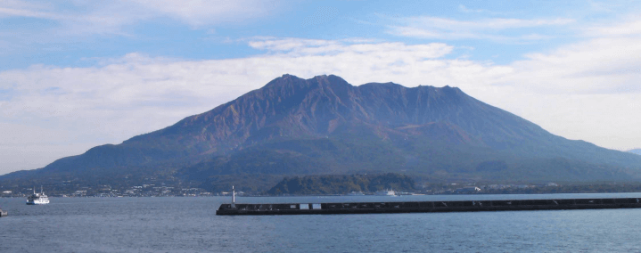
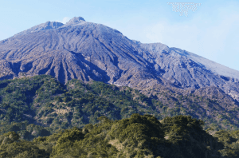
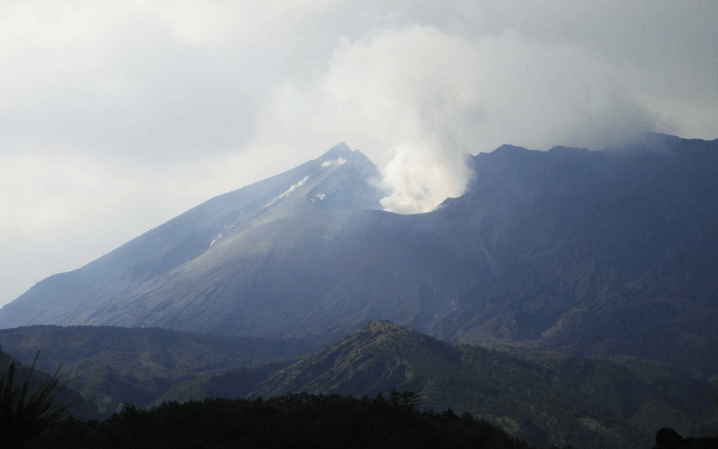

写真でたどる桜島火山の噴火
日本大学文理学部地球科学科 火山・岩石学研究室
2017年７月作成
写真と文：安井真也

写真は出港したばかりのさくらじまフェリーから見た景色です．北岳と南岳，そして大正時代の大噴火の割れ目噴火の起きた斜面が正面に見えます．鹿児島港（桜島フェリーターミナル）から桜島港までの乗船時間は約15分です．1914年の噴火の前までは桜島は錦江湾の中の“火山島”でしたが，噴火で大量の溶岩が流出して南東側が大隅半島とつながりました．桜島南部を通る国道224号は，島の西部から鹿児島市の間は国道の海上区間としてカーフェリーで通行するのです．
桜島火山は古くより多くの火山研究者によってさまざまな研究がされてきています．日本大学文理学部地球科学科の火山・岩石学研究室でも火山地質や岩石学的な視点からの研究を継続的に行ってきています．ここでは歴史時代の２大噴火である大正噴火と安永噴火についての研究成果の概要と最近の活動の様子について，写真を見ながらたどっていきたいと思います．
- １桜島火山の噴火の歴史
- ２桜島火山の歴史時代の２大噴火
- ①大正噴火
- ②安永噴火
- ３最近の噴火活動
- 参考文献
１．桜島火山の噴火の歴史
桜島火山の形成史は多くの研究者により詳しく調べられています（例えば小林，2001参照）．以下では既存研究からその形成史を簡単にまとめます．
姶良（あいら）カルデラの約2.9万年前の大規模噴火の後，カルデラの南縁付近で桜島が活動を始めました．まず北岳（古期北岳と新期北岳）が活動し，その後，南岳が現在でも活動を続けています．
南岳は歴史時代にも大きな噴火を繰り返しています（天平宝字，文明，安永，大正の時代）．大正噴火（1914～1915年）は日本の20世紀最大の噴火で，大量の溶岩が流出して大隅半島と桜島が陸続きになったことでも有名です．その後1946年には昭和溶岩が流出しましたが，桜島では大正噴火に匹敵するほどの大量のマグマを噴出する活動は100年以上にわたって起きていないのです．
1955年以降は爆発と降灰を繰り返す活動が続いています．1980年代は特に活発でしたが，2000年前後頃は静穏となり，2008年以降また活発に噴火を繰り返して現在に至ります．
● 北岳西方の春田山付近に厚く堆積した火山灰層．
南岳北西約3km付近，2005年撮影．
この写真の下部（スケールの鎌の長さ一つ分下）には大正噴火の降下軽石層のトップが見えています．この地点では過去100年間に1．2メートルほど火山灰が堆積したことがわかります．大正噴火の後，昭和溶岩の流出6年ほど前の1939年頃から火山灰の放出があったそうです．しかしながら，火山灰を放出する活動は1955年から本格化したため，この露頭の火山灰層の大半は1955年以降に堆積したものとみられます．この火山灰層は現在進行形の活動によって厚みを増しています．
２．桜島火山の歴史時代の２大噴火
１）噴出物の分布 この図は，大正噴火と安永噴火の噴出物の分布を示しています．等層厚線図と呼ばれる降下火砕堆積物の厚さと分布を示した線からは，いずれの噴火でも東方に噴煙が風で流されたことがわかります．山腹を走る噴火割れ目の標高の高い方に注目すると火砕丘（黄色）が割れ目の両側に形成されています．また両噴火とも溶岩流が大量に流出し，海底にまで流れ込んでいます．大正噴火の場合の当時の海岸線の位置をみると，溶岩によって陸地がかなり増えたことがわかります．また大正噴火の東側では，溶岩によって大隅半島と桜島が陸続きになりました．地図に示された分布は，溶岩が海底に広く拡がったことを示しています．
２）噴火の推移と噴火の様式 安永噴火（1779-1782年）と大正噴火(1914-1915年)の推移と噴火様式を比べると，活動前半はよく似ていることがわかります．両噴火では山頂をはさんだ両側山腹で割れ目火口列が活動しました．割れ目の推定の長さは大正噴火で約2.3 km，安永噴火では5 kmに及びます．噴火開始後数10時間には，高く上昇したプリニー式の噴煙柱から火口近傍へ大量の火砕物（発泡したマグマの破片）が降下して山腹斜面上に火砕丘を形成しながら溶岩流をもたらしました．引き続く数週間には両噴火とも溶岩流出が繰返されて溶岩原が形成されました．その後は，大正噴火が陸上での溶岩流出を主としたのに対し，安永噴火では北東沖で海底噴火が起きて安永諸島を形成した点が大きく異なります．
①大正噴火
湯の平展望台より見る大正噴火（西側山腹）の噴火跡
最上部の火口から画面右手に割れ目火口の跡が見えます．
その両側には火砕丘が高まりを作っています．
水蒸気を上げる南岳と，その左手に北岳の火山体が見えます．
西側山腹の割れ目火口の内側の様子
この谷地形内に見える堰堤を結んだ線が大正噴火の割れ目火口の位置であったと考えられます．
画面奥には北岳が見えます．
黒神の埋没鳥居
桜島東部の黒神地区で保存されている埋没鳥居です．桜島・錦江湾ジオパークのジオサイト17番になります．
大正噴火で軽石がこの付近に厚く堆積したことを物語っています．
埋没鳥居のそばの大正噴火の軽石層の断面．
２メートル以上の厚さがあることがわかります．
露頭最上部の黒っぽい部分は過去100年間に降り積もった火山灰の地層です．
スケール： 1メートル
西側山腹の大正溶岩．
烏島展望台付近．
この付近は，噴火前は海でしたが，現在では溶岩原になっています．この展望台付近には噴火前に烏島がありました．烏島は，噴火開始7日後の1月19日に溶岩に完全に囲まれてわからなくなり，その後埋没したことが記録に残っています．
有村展望台より見る大正溶岩と昭和溶岩の溶岩原
大正噴火では，瀬戸，脇，有村，の集落がこの溶岩の下に埋没しました．
有村展望台付近でみるブロック溶岩
大正溶岩の表層部は塊状の溶岩塊の集合であることがわかります．

大正溶岩（東側）で囲まれた入り江 （有村付近）
現在は静かな入り江となっていますが，約１世紀前には， 水蒸気がもうもうと上がる大正溶岩のオーシャンエントリーの現場でした．
②安永噴火

雨裂やガリーの発達した山頂直下の斜面
この写真は安永噴火の南側の火口付近を撮影したものですが，火口地形はあまりはっきりとしません．
古里温泉の海岸で見られる安永溶岩．
溶岩の表層部分を構成する緻密な多角形の溶岩塊がゴロゴロしています．
今はひっそりとしていますが，ここは約240年前の江戸時代のオーシャンエントリーの現場なのです．
安永噴火の後半の海底噴火で形成された新島と安永諸島の一つ．
新島は海底に噴出した溶岩によって持ち上げられたカルデラ底の堆積物から成ります．
一方，潜水艦のような形の島（下の写真）は，溶岩から成る岩礁です．
３．最近の噴火活動
南岳では1955年以降，爆発と降灰を繰り返す活動が続いています．1980年代は特に活発でしたが，2000年前後頃は静穏となり，2008年以降また活発に噴火を繰り返しています．最近は，1946年に昭和溶岩を流出した“昭和火口”からの噴火が主で，南岳火口からの噴火は多くはありません．活動が活発な時期に桜島を訪れると，時々，大音響とともに噴煙が数1000メートルの高さまで立ち上る爆発的な噴火をみることができますが，音もなく灰を放出しつづける活動も日常的に見られます．この結果として，山全体が灰にまみれて，鹿児島市で行われている“克灰袋”や“克灰住宅”といった独特な取り組みにもうなずかされます．

水蒸気を上げる昭和火口．（2010年12月撮影）
2008年以降活発な活動を続ける昭和火口です．
火口の周りに火山灰が厚く降り積もって，プリンのような形の火山体が南岳の東斜面に付け加わっています．
● 昭和火口周辺の地形変化
昭和火口が活発な噴火を始めて約半年後の様子です．火口の画面手前の斜面はえぐれたようになっています．（2008年12月撮影）
約８年前の写真（上）と比べると，多数回の噴火によって火山灰が厚く堆積した結果，昭和火口の周囲の山体がかなり成長したことがわかります．（2017年3月撮影）
● 2013年7月23日17～19時の噴火
噴火開始直後の様子．古里より撮影．
この日，17時に音もなく始まった噴火では，ひたすら火山灰を噴出し続け，2時間で終了しました．ちょうど安永溶岩の調査中に一部始終を目撃したので，ここではその様子をレポートします．
噴火開始10分後の様子．古里より撮影．
噴火開始約1時間半後．黒神北方の地獄河原付近より撮影．東方に流される噴煙．
昭和火口の東方の噴煙の風下にでの調査風景．
紙をしいてみると，1ミリメートル未満の火山灰粒子がハラハラと落ちてくる様子が観察できました．（18時12分撮影）
葉の上にも火山灰がたまっています．
噴火開始約１時間半後．
噴煙の下での調査中に車のフロントガラスに結構な量の火山灰がたまりました．
長期にわたって続く降灰のために，辺り一面が灰色の火山灰の世界となっています．
火山灰の上を歩きます．
地面を少し掘ってみると，火山灰が厚く堆積していることがわかります．
有村展望台付近にて撮影．
約２時間後，火山灰の放出が極端に少なくなり噴火はほぼ終了しました．
桜島島内
● 克灰袋と宅地内降灰指定置場
鹿児島では“克灰袋”に入れられた火山灰を市が収集する独特のシステムがあります． この他，桜島島内には，気密性が高く，サンルーフなどをもつ“克灰住宅”が試験的に建設されています．
鹿児島市内
桜島の活動が活発な時は，島中が灰まみれ，地面でゴロゴロする猫も灰まみれです．この猫は一向に気にならない様子ですが…
有村展望台の駐車場にて．
参考文献
- 小林哲夫（２００１）桜島火山の噴火史 日本火山学会第8回公開講座資料
- http://www.kazan-g.sakura.ne.jp/J/koukai/01/kobayashi.html Yasui, M., Takahashi, M., Shimada, J., Ishihara,K and Miki,D.(2013) Comparative study of proximal eruptive events in the large-scale eruptions of Sakurajima Volcano: the An-ei vs. Taisho eruption. Submitted to the special issue of Sakurajima Volcano, Bull. Volcanol. Soc. Japan. 58, 59-76.
- Takahashi, M., OTSUKA, T, Hisash., Sako, H., KAWAMATA, Yasui, M, Kanamaru, Otsuki, M, Kobayashi, T, Ishihara,K and Miki,D. (2013)Temporal Variation for Magmatic Chemistry of the Sakurajima Volcano and Aira Caldera Region, Southern Kyushu, Southwest Japan since 61 ka and Its Implications for the Evolution of Magma Chamber System. Submitted to the special issue of Sakurajima Volcano, Bull. Volcanol. Soc. Japan. 58, 17-42.
- 安井真也(2012)安山岩質降下軽石と溶岩流の結晶破砕度 ─浅間火山と桜島火山の噴出物の場合─火山,57,145-158.
- 安井真也・高橋正樹・石原和弘・味喜大介(2007)桜島火山大正噴火の噴火様式とその時間変化,火山,52,3,161-186.
- 高橋正樹・大塚匡・川俣博史・迫寿・安井真也・金丸龍夫・大槻明・島田純・厚地貴文・梅澤孝典・白石哲朗・市来祐美・佐竹紳・小林哲夫・石原和弘・味喜大介(2011)桜島火山および姶良カルデラ噴出物の全岩化学組成--分析データ583個の総括--日本大学文理学部自然科学研究所研究紀要46,133-200
- 安井真也・高橋正樹・石原和弘・味喜大介(2006)桜島火山大正噴火の記録,日本大学文理学部自然科学研究所研究紀要,41,75-107
 Department of Geosystem Sciences, College of Humanities and Sciences, Nihon University
3-25-40, Sakurajosui, Setagaya-ku, Tokyo 156-8550 Japan
Department of Geosystem Sciences, College of Humanities and Sciences, Nihon University
3-25-40, Sakurajosui, Setagaya-ku, Tokyo 156-8550 Japan